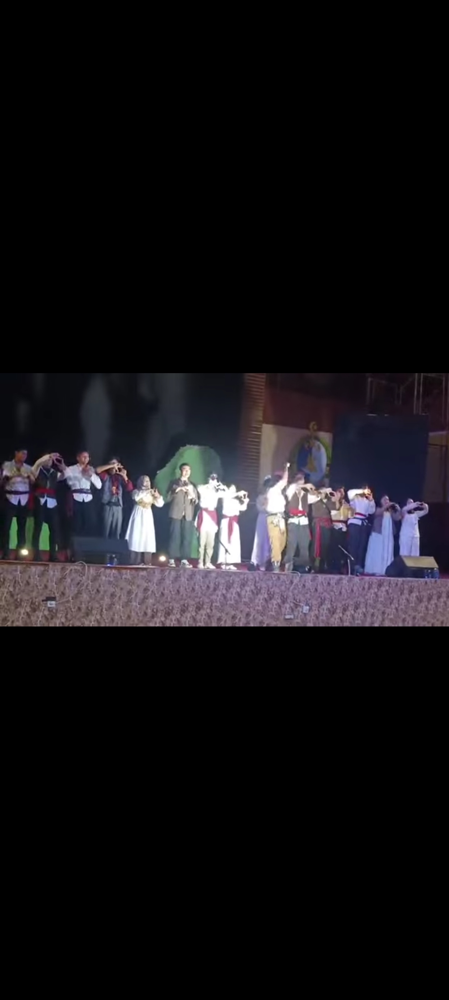

Penelitian Tindakan Kelas (PTK)
"Kono Axel ni wa yume ga aru... Klik foto untuk memperbesar dokumentasi!"
📸 DOKUMENTASI 01 • HASIL KARYA
DI MOLTO!

🐞 Penjelasan Karya & Kegiatan
Melaksanakan pentas PTK yang berlangsung pada 17 Desember 2025 sebagai sarana untuk pembelajaran serta hiburan saat kelas 11. Berperan sebagai "Tiny" yang menampilkan pertunjukan teatrikal musikal yang menggunakan tema bajak laut dengan genre aksi & petualangan.
Pertunjukan ini terinspirasi dari film "Pirates of the Caribbean"
📌 Catatan Tambahan: Pertunjukan pentas seni dalam rangka besar yang pertama dan terakhir semasa SMA, lelah namun sangat menyenangkan!
🎬 DOKUMENTASI VIDEO • LIVE REPLAY
MOODY BLUES!